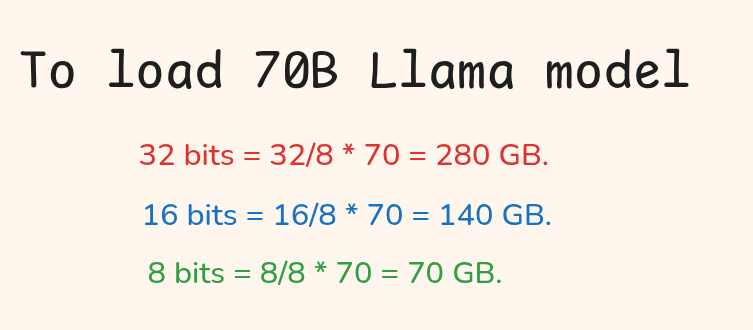
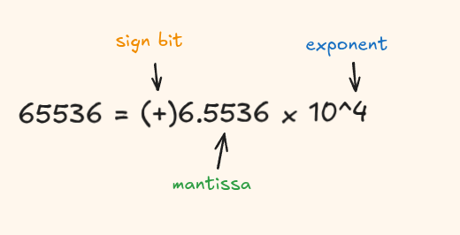
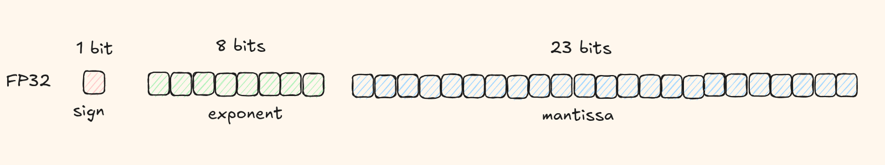
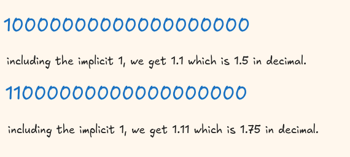
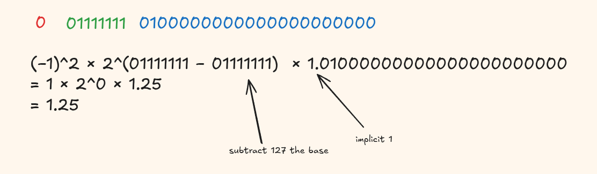
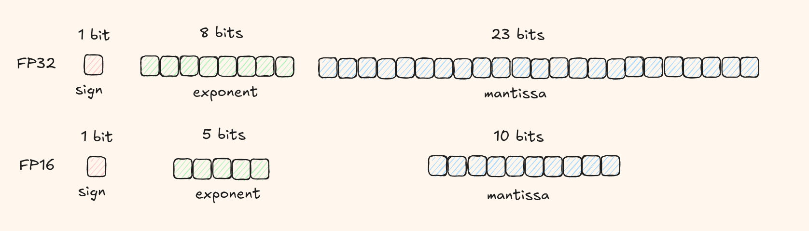
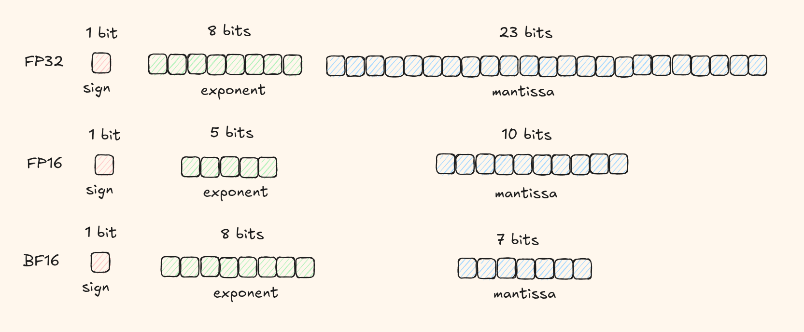

LLMs keep getting better, but they also keep getting bigger. Frontier models now have over 1 trillion parameters. It's amazing when you can just call an API and get a response but what if you wanted to run these models yourself?
The first step is loading the weights into memory. For a 70B parameter model in full precision (fp32), you'd need 70 billion x 4 bytes = roughly 280 GB. That's more than most GPUs have!
Quantization makes LLMs N times smaller and faster while sacrificing only a fraction of performance. Pretty powerful, yes?
But before we talk about how quantization works, you need to understand how numbers are actually stored in memory. This post is all about building the mental model before we go into quantization techniques.

How Computers Represent Numbers
Floating point numbers are stored using three components:
- Sign bit: 1 bit that tells us if the number is positive or negative.
- Exponent: Controls the scale or magnitude of the number.
- Mantissa (also called fraction): The actual digits that determines precision.
The general formula is:
value = (-1)^sign x (1.fraction) x 2^(exponent - bias)The bias is a constant that lets us store negative exponents using only positive numbers. We'll unpack this when we look at fp32.

float32 (Single Precision)
fp32 is the standard 32-bit floating-point format, it's what people mean when they say "full precision".

The Sign Bit
A single bit determines whether the number is positive or negative. 0 means positive, 1 means negative. This gives us symmetric range for positive and negative values.
The Exponent and the Bias
We have 8 bits for the exponent, which can represent values from 0 to 255. We can represent very large numbers (like 10^38) and very small numbers (like 10^-38) using these same 8 bits.
The problem is that exponents can be negative, but we can't store a minus sign in unsigned binary. The solution is to use biased representation: we add a constant (called the bias) to the actual exponent when storing it.
The bias formula is:
bias = 2^(k-1) - 1where k = number of exponent bits. For fp32 with 8 bits:
bias = 2^(8-1) - 1 = 2^7 - 1 = 127So when we store an exponent, we add 127 to the actual exponent. When we read it, we subtract 127. This shift lets us represent negative exponents without needing a sign bit for them.
Special Exponent Values
According to IEEE-754, two exponent values are reserved for special cases:
00000000(all zeros) is reserved for zero and subnormal values11111111(all ones) is reserved for infinity and NaN (not a number)
This means valid stored exponents range from 1 to 254 (not 0 or 255). So the actual exponent range is:
-126 ≤ E ≤ +127The Mantissa (the fractional part)
We have 23 bits for the mantissa. But here's a secret, for normalized numbers, there's an implicit leading 1. We don't actually store that leading 1 because its always present for normalized values.
A normalized floating-point number means the number is written in a standard form where the binary representation starts with exactly one non-zero digit before the decimal point. Zero is not a normalized number.
So we effectively get 24 bits of precision (the implicit 1 plus the 23 stored bits).

Let's walk through decoding an fp32 number step by step. Say we have this binary:

float16 (Half Precision)
fp16 uses half the bits of fp32 hence requiring only half the memory needed for fp32.

The Sign Bit
Same as fp32, just 1 bit to tell us if the number is positive or negative.
The Exponent and the Bias
We have 5 bits for the exponent. Using the bias formula:
bias = 2^(5-1) - 1 = 2^4 - 1 = 15With 5 bits, stored exponents go from 0 to 31. But 0 and 31 are reserved (just like in fp32), so valid stored exponents range from 1 to 30.
The actual exponent range is:
-14 ≤ E ≤ +15The Mantissa
We have 10 bits for the mantissa. Similar to fp32, there's an implicit leading 1 for normalized numbers, giving us 11 bits of effective precision.
Compared to fp32's 23 bits, fp16 only has 10 mantissa bits, this means much less precision. This limited precision causes two main problems:
- Gradient underflow: Values that are too small (like 8.9 x 10^-10) can't be represented and get rounded down to zero, causing the model to stop learning.
- Gradient overflow: If gradients are too large to fit within the representable range, they become infinity or NaN, breaking training entirely.
bfloat16 (Brain Float)
bf16 was developed by Google Brain (hence the name) specifically for deep learning. It strikes a better balance between range and precision than fp16.

The Sign Bit
Still just 1 bit.
The Exponent
bf16 gives us 8 bits for the exponent - the same as fp32! This preserves the vast range that fp32 offers.
bias = 2^(8-1) - 1 = 2^7 - 1 = 127The actual exponent range is:
-126 ≤ E ≤ +127The Mantissa
We only have 7 bits for the mantissa - even less than fp16's 10 bits. This means bf16 actually has less precision than fp16.
For deep learning, having a wide range matters more than having ultra-fine precision. The gradients during training can vary wildly in magnitude, and bf16's fp32-like exponent helps avoid the gradient problems that fp16 faces.
A quick review of the formats
Here's a quick comparison of the three formats we've covered:
| Format | Sign | Exponent | Mantissa | Min Value | Max Value |
|---|---|---|---|---|---|
| fp32 | 1 bit | 8 bits | 23 bits | ~1.2 x 10^-38 | ~3.4 x 10^38 |
| fp16 | 1 bit | 5 bits | 10 bits | ~6.0 x 10^-5 | ~6.5 x 10^4 |
| bfp16 | 1 bit | 8 bits | 7 bits | ~9.2 x 10^-39 | ~3.4 x 10^38 |
With what we have learned so far, can we now take a look when bfp16 is more reliable over fp16?
During backpropagation, suppose you have a gradient value of 1.2 x 10^-8, a small but important update that helps the model learn.
With fp16
- Smallest representable positive number ≈ 6 x 10^-5
- Your gradient of 1.2 x 10^-8 is way below this and gets rounded to 0
- The model essentially stops learning from this update
With bfp16
- Smallest representable positive number ≈ 9 x 10^-39 (same range as fp32)
- Your gradient of 1.2 x 10^-8 is easily representable
- The update is applied correctly and everyone lived happily ever after
I think you are now ready to start understanding some real quantization algorithms.
until then, ciao!